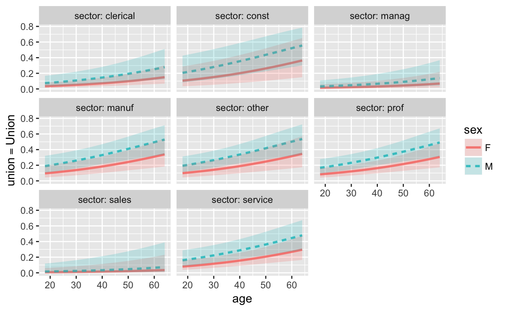

Introductory statistics curricula are filled with topic after topic. The GAISE College report rightly identifies this as a problem, recommending that instructors “avoid the unfortunate, but not uncommon, reality that many students leave their introductory course thinking of statistics only as a disconnected collection of methods and tools.” (p. 13) The report goes on to recommend that instructors “focus on students’ understanding of key concepts, illustrated by a few techniques” and “pare down content of an introductory course to focus on core concepts in more depth.” (p. 16)
It’s hard to argue with this. But what are the “key” or “core” concepts or techniques of statistics? GAISE points to nine goals for students in introductory courses. These are a mix of concepts to be understood (e.g. randomness, variation) and technical skills. The technical skills are:
- Students should be able to produce graphical displays and numerical summaries and interpret what graphs do and do not reveal.
- Students should gain experience with how statistical models, including multivariable models, are used.
- Students should demonstrate an … ability to use basic ideas of statistical inference, both hypothesis tests and interval estimation, in a variety of settings.
- Students should be able to interpret and draw conclusions from standard output from statistical software packages.
Other StatPREP tutorialsabout graphical displays and numerical summaries introduce techniques relevant to goal (3). This tutorial is about goals (6), (7), and (8). In particular, I want to show you how one technique, regression, can be used to achieve all three of those goals.
We often think about introductory stats in terms of a few descriptive statistics: means, proportions, counts. They provide a way to summarize data. A richer way to summarize data is using the statistical modeling paradigm:
There is a response variable and one or more explanatory variables. We describe the relationship between the explanatory variable(s) and the response by constructing a mathematical function that takes values of the explanatory variables as input and produces an output value consistent with the patterns implicit in data.
Regression is a general technique for constructing such a function from data when the response variable is quantitative. (Models that have a categorical response variable are called “classifiers.”) An important regression tool in R is the lm() function. lm() is used like other goal/formula/data template functions.
lm() is the goal. There are other, similar goals such as rlm() and glm() and even randomForest. All these functions build models.To illustrate, we’ll use data from the Current Population Survey recording workers’ wages, the sector of the economy in which they work, their age and educational achievement, and other demographic information. The data frame is called CPS85. We’ll try to explain the wage (in dollars per hour) using various of the other variables. For instance, the following command block constructs two models: one involving a quantitative explanatory variable, the other a categorical explanatory variable. (And, of course, the response variable in regression is always quantitative: that’s wage here.)
modelA <- lm(wage ~ educ, data = CPS85)
modelB <- lm(wage ~ sex, data = CPS85)
# You won't see any output because we're storing the results, not printing them.The only part that requires thought is the choice of an appropriate response variable and explanatory varible(s) to address the research question motivating the statistical analysis. Model A would be appropriate for a research question “How does education contribute to wage?” Model B might be, “By what amount, if any, do wages differ between the sexes.”
You might be curious to look at Models A and B. But there are many different ways to look at them, and it’s important to know which is which.
mod_plot(), for instance mod_plot(modelA).Evaluate the model function for specified inputs. This can be as simple as mod_eval(modelA) which will choose a couple of “typical” input values. Or, you can specify the inputs using arguments to mod_eval(), for instance
mod_eval(modelA, educ = 12)
mod_eval(modelB, sex = "F")Calculate the effect size, that is, how much the output changes for a change in input. This is done with mod_effect(). Example: to look at how wage changes with eduction or with sex, use
mod_effect(ModelA, ~ educ)
mod_effect(ModelB, ~ sex)Neither mod_plot(), mod_eval() nor mod_effect() are goal/formula/data template functions. There’s no data = argument for any of them. The formula in mod_effect() specifies which explanatory variable to find the effect size for. That’s obvious here since there is only one explanatory variable in each of those models. But you can also build models with multiple explanatory variables.
Go back to the command block and add in statements to plot the models, evaluate the models, and calculate the effect size. Try to interpret the results in everyday terms.
The basic logic of confidence intervals is to recalculate the model value or effect size on many different samples taken from the population. At the data modeling stage, we don’t have the population at hand, so we simulate the sampling process by taking resamples from the data. Each of these models constructed on a single resample is called a “trial.” A set of trials is called a “bootstrap ensemble”. In the following, we’ll create a 5-member bootstrap ensemble and apply mod_plot(), mod_eval(), and mod_effect() to that.
modelA <- lm(wage ~ educ, data = CPS85)
ensembleA <- mod_ensemble(modelA, nreps = 5)
mod_plot(ensembleA)
mod_eval(ensembleA)
mod_effect(ensembleA, ~ educ)You can use the gf_point() or df_stats() to show the spread of trials or the confidence intervals. Typically, one would use and ensemble of 100 trials. We’ve used just 5 here to avoid overcrowding the display.
Exercise: Use 100 trials and display the spread of trials with gf_point().
One of the nice things about lm() is that you can get a confidence interval on the model output using “normal theory.” Once students understand the variation introduced by sampling, this can simplify discussion.
modelA <- lm(wage ~ educ, data = CPS85)
mod_eval(modelA, interval = "confidence")
mod_eval(modelA, interval = "prediction")There’s also a prediction interval which emphasizes the range of possible outcomes for individuals. So even when the confidence intervals don’t overlap, the predictions may overlap quite a lot.
The two main kinds of “standard” output are
modelA <- lm(wage ~ educ, data = CPS85)
summary(modelA)
anova(modelA)Many intro stats courses cover (or hope to cover) these settings for inference.
And then there are the versions that are robust to outliers, typically involving non-parametric techniques such as rank-sum tests.
This section shows how to all these tests with the tools covered above. But we need two new ideas.
Idea 1. “Single mean” or “single proportion”, when translated to modeling terms. means that there is no explanatory variable. As a formula, this is written with a 1 on the right-hand side of the formula, for instance, wage ~ 1. Idea 2. Proportions are means. If we are interested in examining the proportion of cases in which a categorical level takes on a specified value, we can translate the categorical variable into a quantitative 0-or-1 variable and calculate the proportion by taking the mean of the 0-or-1 variable. For example, the proportion of workers who are female in CPS85 can be studied by using sex == 'F'" as the response variable. The response variable for studying the proportion of workers who work in construction issector == ‘const’. The response variable for studying the proportion of workers who earn more than $12/hr iswage > 12`.
Consider the model of wage as a function of … nothing! That is, wage ~ 1, which is the single model value representing every row of the data.
Suppose we want to know the proportion of workers who belong to a union.
Are the wages different for men and women?
Do the intervals overlap?
Do a different proportion of men and women belong to unions?
Do the intervals overlap?
Do the intervals overlap?
What we call one-way ANOVA is just standard ANOVA in the context of a categorical explanatory variable with multiple levels.
What we call two-way ANOVA is standard ANOVA in a context where there are two categorical explanatory variables. We haven’t yet talked about multiple explanatory variables, so this is a little premature, but it’s not too much of a jump. We’re not concerned with whether the output depends on the variables individually, but whether one variable modulates the effect of another. This modulation is called an “interaction” in statistical terminology.
The p-value on the interaction line, sector:sex, tells us the result. If you’ve tried to teach two-way ANOVA, but don’t know what an interaction is see the tutorials on models with multiple explanatory variables.
A chi-squared test examines whether two categorical variables are associated.
There’s no simple regression equivalent of the chi-squared test. Recall that regression always has a quantitative response variable, and the two variables involved in chi-squared are quantitative.
Often, at least one of the categorical variables has only two levels. Such categorical variables can be translated into quantitative variables with values 0 and 1, as we did in sections (b) and (d). In this setting, we do the moral equivalent of a chi-squared test by carrying out ANOVA on a model involving a two-level response and any other categorical variable.
The p-value is small, so we can reject the null that the probability of belonging to a union is independent of job sector. Even better, we can see how big the variation is:
Experiment with regression using whatever data and variables that are of interest to you.
Recall Goal 6 from the GAISE report …
- Students should gain experience with how statistical models, including multivariable models, are used.
The reasons multivariate models are important, and why GAISE specifically mentions them, are:
The ways to use multivariable models to deal with covariates require more space than can be taken in this tutorial. That also means that they will take more time in your course. All the more reason to streamline your course by using regression as a unifying theme.
To give a quick illustration let’s return to the example of union membership differing by sector. As shown in setting (h) above, there’s clearly a connection between sector and union membership. But there are also connections between sector and sex. And age may be related to union membership. Let’s see if sector explains union membership when we take those covariates into account.

Age and sex seem to be related to union membership. And we see pretty clear differences between the management and sales sectors (low union membership) and manufactoring, construction, professional and service sectors.
Oh, and point out that lm() is not the only way to construct a model, we decided to use logistic regression: that’s why the model-constructing function is glm() rather than lm(). Still, you can make pretty good sense of both the commands and the result. As a rule, logistic regression is more appropriate for regression on proportions when there are multiple explanatory variables or even a single quantitative explanatory variable.